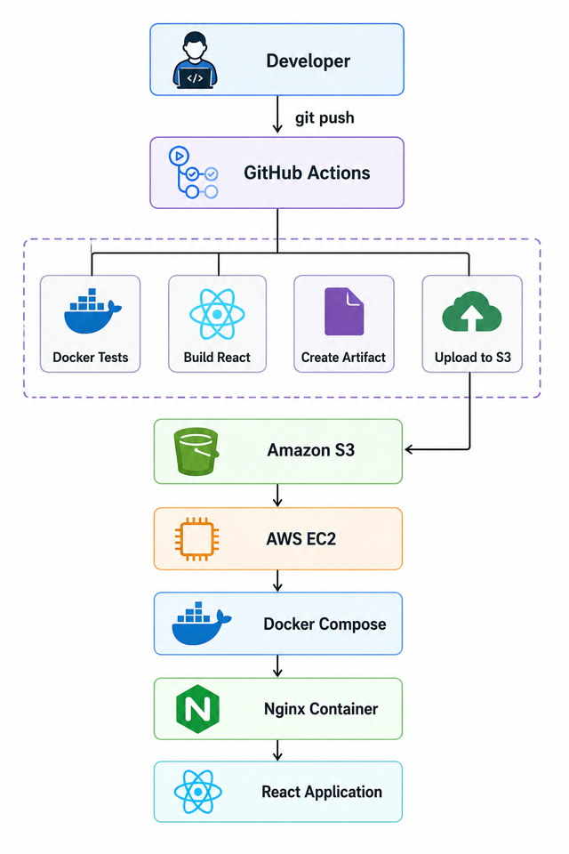
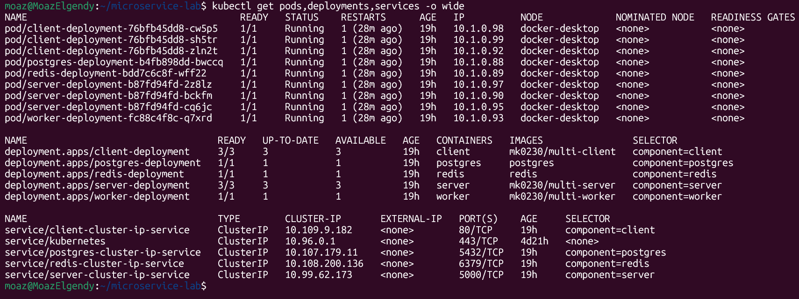
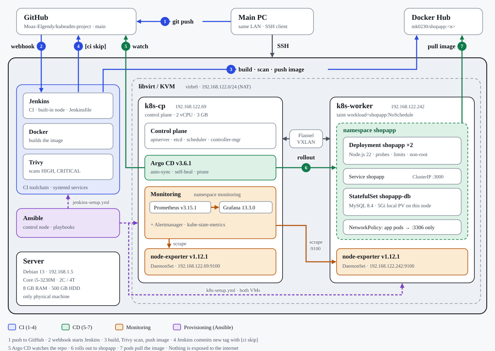
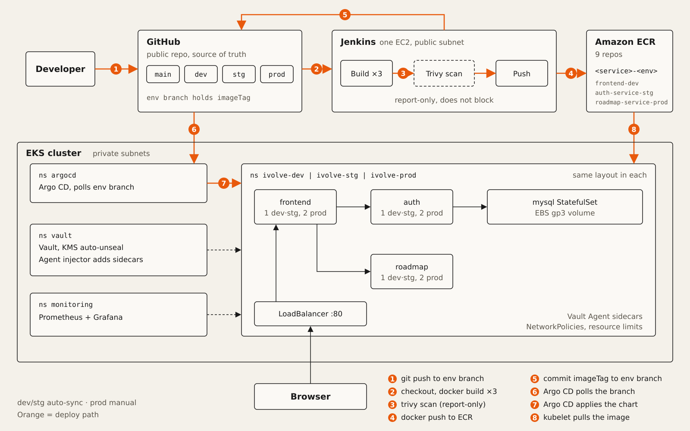

2025, where it started
It started with packets
I am a communication and electronics engineer. Before any cluster, I learned how data really moves: CCNA labs, then a network engineering internship at CONNECT. VLANs, trunks, STP and EtherChannel on the switching side. OSPF, EIGRP, BGP and VRF on the routing side.
A cluster is a network first. Pod networking, Services, Ingress and NetworkPolicy are the same ideas with new names.
2025, the turning point
Network automation was the door
I was studying routing and switching when I met network automation. Configuring one device by hand is a lab. Configuring fifty with code is engineering. I followed that idea step by step and it led me into DevOps.
I can chase one error for hours and not feel tired. A little frustrated, maybe. Who isn't?
DEPI DevOps training, first project
My first pipeline, end to end
A React app, containerised twice: a development image with live reload, and a production image that is only Nginx and the static build. GitHub Actions tests and builds it, uploads the artifact to S3, then deploys to EC2 with Docker Compose. A separate Jenkins pipeline runs the same tests.
Early work. The repository layout has drifted since, and its README says so.

DEPI DevOps training, second project
Five services, one cluster
An asynchronous Fibonacci calculator, built to watch one request cross service boundaries. The API stores the request in PostgreSQL and publishes it to Redis. A separate worker computes the result. Ingress sends / to the client and /api to the server.

August 2025 to June 2026, graduation project
A side track that got published
PULSE classifies heartbeats and forecasts vital signs. I trained 1D CNN and CNN-LSTM models on the MIT-BIH Arrhythmia Database and built the ECG preprocessing. SMOTE ran on the training split only, so synthetic beats never reached validation or test data.
Then I deployed the team's FastAPI backend on AWS EC2. The paper was presented at IMSA 2026 and published in IEEE Xplore.
September 2026, flagship project
A cluster that fixes itself
Sentinel SRE watches a multi-service app on K3s through Prometheus metrics, Loki logs and Alertmanager alerts. It chooses one of four fixes: restart, scale, rollback or chaos-fault reset. A 30-second confirmation window stops short spikes from triggering anything.
The model advises. Policy authorises. Typed executors act. Recovery checks decide whether it worked.
Terraform provisions the AWS hosts. GitHub Actions builds the images, pushes them to ECR and deploys through Systems Manager, signing in with OIDC. Anything outside the allow-list goes to an engineer on Slack.
November 2026, project
A GitOps platform on one old laptop
Two KVM virtual machines, 8 GB of RAM, a real kubeadm cluster. Jenkins builds and scans the image, then commits the new tag to Git. Argo CD does the rest with self-heal and prune. Jenkins never touches the cluster.
The same season I worked as a DevOps intern at iVolve Technologies: 28 documented labs that take an app from a local build to a GitOps release.

November 2026, iVolve final project
The same pipeline, now on EKS
The final project moves the GitOps pattern to managed cloud. Terraform builds the VPC, one EKS cluster, nine ECR repositories and the Jenkins host, with state in S3. Ansible configures Jenkins through dynamic inventory. One Jenkins pipeline builds three services, scans them with Trivy, pushes to ECR and commits the new tag. Argo CD deploys each environment from its own branch.
Secrets live in HashiCorp Vault, auto-unsealed with KMS and injected into pods by a sidecar. Prometheus and Grafana watch the cluster. Jenkins never talks to the cluster.

End of the line
Put me on your pipeline
I am looking for a junior DevOps or cloud role. I am based in Giza, Egypt.
moazm.anas@gmail.comEducation
B.Eng. Communication and Electronics Engineering, Canadian International College, 2026. GPA 3.58.
Experience
DevOps intern at iVolve Technologies. DevOps trainee at NTI and DEPI. Network engineering intern at CONNECT. ICT intern at Dar Al-Handasah.
Training
Red Hat Academy: RH124, RH134, DO180 OpenShift, RH294 Ansible. AWS: Cloud Foundations, Security Foundations, Cloud Architecting. CCNA training.